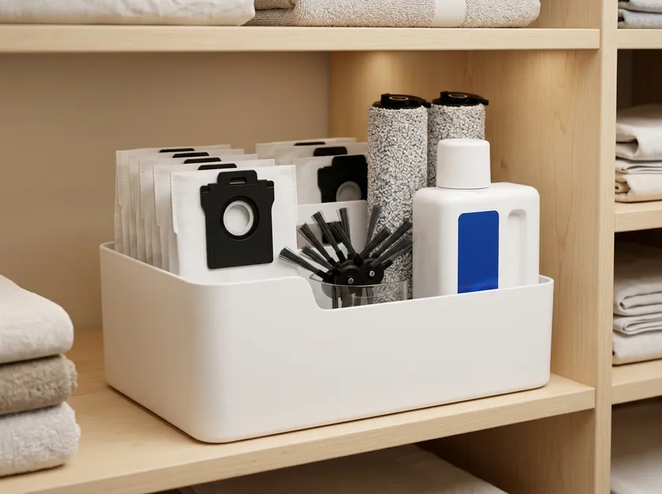

모바 (MOVA)
모바 S70 울트라 롤러 세제 미포함 1년 세트 구성과 롤러 물걸레 교대 루틴
글·구성: 제이상점 · 기종별 1:1 호환 실물 점검 · 교체 주기 비교표 · 스마트스토어 패키지 안내

핵심 관리 · 선택 체크포인트
- 원통형 롤러 물걸레를 사용하는 모바 S70 Ultra Roller 기종에서 세제 여분이 충분할 때는 롤러 패드와 브러시, 필터, 더스트백만 모은 세제 미포함 1년 세트가 알맞습니다.
- 원통형 롤러 물걸레와 원추형 듀오브러시 교대 건조 포인트: 바닥 오염을 실시간으로 닦아내는 원통형 롤러 물걸레는 주기적으로 본체에서 분리해 안쪽 코어까지 통풍 건조해 주면 극세사 탄성과 위생을 오래 유지할 수 있습니다.
- 1년 패키지 구성품과 기종별 옵션 확인표: 세제 포함 여부만 다르고 핵심 호환 부품 구성은 동일하므로 현재 남은 세척액 양에 맞춰 선택하시면 됩니다.
- 베란다 건조 랙과 다용도실 캐디로 완성하는 5분 교체 동선: 세척한 롤러 물걸레와 필터를 건조 랙에 올려두는 즉시 캐디에서 마른 예비 부품을 꺼내 장착하면 다음 예약 청소를 기다릴 필요가 없습니다.
- 물세척 필터의 올바른 건조 시간은 필터 세척 후 24시간 건조·재장착 안내에서, 듀얼 브러시 교체 시점 판단은 듀얼 롤러 마모 상태 확인법에서 살펴보실 수 있습니다.
실물 부품 디테일 · 관리 구성 이미지




부품 규격 · 점검 기준표
| 확인 항목 | 부품·옵션 특징 | 점검·선택 포인트 |
|---|---|---|
| 원통형 롤러 물걸레 | 장폭 극세사 롤러 물걸레 패드 | 세척 후 세워서 통풍 건조하며 예비 롤러와 교대 장착 |
| 원추형 듀오브러시·3발 사이드브러시 | 엉킴 방지 듀오브러시 쌍 + 3갈래 사이드브러시 | 회전축 먼지 제거 및 고무 날개 마모도 확인 |
| 다크그레이 필터·더스트백 | 직사각 헤파필터 + 슬라이딩 칼라 먼지봉투 | 필터 완전 건조 후 장착 및 도크 더스트백 밀착 확인 |
💡 교체 주기가 겹치는 필터·브러시·물걸레·더스트백은 단품 배송비를 여러 번 내기보다 모바 S70 Ultra 롤러 기간별 세트(3개월·6개월·1년)로 미리 구비해 두면 물세척 후 24시간 교대 건조까지 끊김 없이 관리할 수 있습니다.
자주 묻는 질문 (FAQ)
Q. 모바 S70 울트라 롤러 세제의 원통형 롤러 물걸레 규격과 관리 기준은 무엇인가요?
A. 장폭 극세사 롤러 물걸레 패드 규격을 사용하며, 세척 후 세워서 통풍 건조하며 예비 롤러와 교대 장착 기준으로 점검·교체하면 청소 효율을 안정적으로 유지할 수 있습니다.
Q. 모바 S70 울트라 롤러 세제의 원추형 듀오브러시·3발 사이드브러시 규격과 관리 기준은 무엇인가요?
A. 엉킴 방지 듀오브러시 쌍 + 3갈래 사이드브러시 규격을 사용하며, 회전축 먼지 제거 및 고무 날개 마모도 확인 기준으로 점검·교체하면 청소 효율을 안정적으로 유지할 수 있습니다.
Q. 모바 S70 울트라 롤러 세제의 다크그레이 필터·더스트백 규격과 관리 기준은 무엇인가요?
A. 직사각 헤파필터 + 슬라이딩 칼라 먼지봉투 규격을 사용하며, 필터 완전 건조 후 장착 및 도크 더스트백 밀착 확인 기준으로 점검·교체하면 청소 효율을 안정적으로 유지할 수 있습니다.
제이상점 1:1 검수 추천 패키지 · 구매 안내
메인 추천 구성
대표 구성 참고가 70,000원대 (옵션·쿠폰별 스마트스토어 결제 화면 기준)
1년 세트 (세제 미포함)6개월 세트 (세제 미포함)3개월 세트 (세제 미포함)
☑️ 주문 전 확인해 두면 좋은 제이상점 안심 포인트
· 기종별 1:1 전용 규격 검수: 모델명·연식에 맞는 호환·정품 구성을 검수해 오주문 불안을 줄였습니다.
· 해외직배송 미리 주문 팁: 중국 구매대행·해외직배송 상품이므로 마지막 여분 1개를 꺼내 쓰는 시점에 개인통관고유부호와 함께 여유 있게 주문해 두시면 훨씬 경제적인 비용으로 끊김 없이 교체하실 수 있습니다.
· 기종별 1:1 전용 규격 검수: 모델명·연식에 맞는 호환·정품 구성을 검수해 오주문 불안을 줄였습니다.
· 해외직배송 미리 주문 팁: 중국 구매대행·해외직배송 상품이므로 마지막 여분 1개를 꺼내 쓰는 시점에 개인통관고유부호와 함께 여유 있게 주문해 두시면 훨씬 경제적인 비용으로 끊김 없이 교체하실 수 있습니다.
📖 더 많은 가정 내 사용 스토리와 상세 후기가 궁금하시다면
📱 네이버 블로그 모바일 원문 보기 ↗